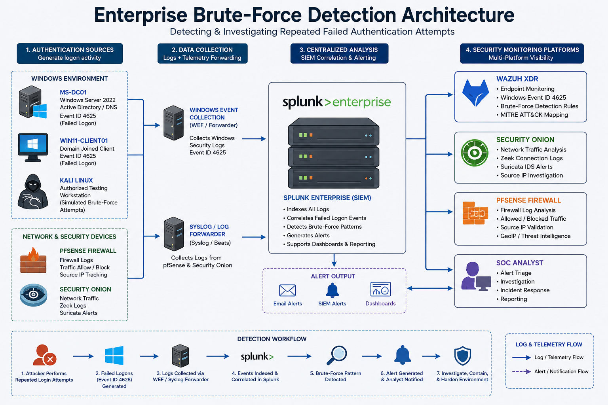

Brute-Force Attack Detection & Investigation
Project Overview
This project demonstrates the detection and investigation of repeated failed authentication activity within the MaryShield Cyber Lab.
The case study focuses on Windows Event ID 4625, authentication patterns, source IP analysis, SIEM correlation, endpoint monitoring, network telemetry, firewall evidence, MITRE ATT&CK mapping, detection engineering, containment, and defensive hardening.
All security-testing activity documented in this project was performed only within the isolated and authorized MaryShield Cyber Lab environment.
Enterprise Brute-Force Detection Architecture
The architecture below shows how authentication activity is generated, monitored, collected, and correlated across Windows systems and enterprise security platforms.

Attack Scenario
A controlled failed-authentication scenario was generated within the lab to simulate repeated login attempts against an authorized Windows or Active Directory account.
The objective was to determine whether repeated authentication failures could be detected, correlated, investigated, and contained using multiple security platforms.
Lab Environment
| System | Role |
|---|---|
| MS-DC01 | Windows Server 2022 / Active Directory / DNS |
| WIN11-CLIENT01 | Domain-joined Windows endpoint |
| Kali Linux | Authorized security testing workstation |
| Splunk Enterprise | SIEM and centralized event correlation |
| Wazuh XDR | Endpoint security monitoring |
| Security Onion | Network security monitoring |
| pfSense | Firewall, routing, segmentation, and containment |
Normal Authentication Baseline
Normal authentication activity was reviewed before the controlled simulation to establish a reference point for expected logon behavior.
Baseline Activities
- Normal successful domain logon
- Expected source workstation
- Known user account
- Normal authentication timestamps
- Typical source IP address
- Expected logon type

Controlled Failed-Authentication Simulation
A controlled series of failed authentication attempts was performed against an authorized lab account to generate realistic Windows security telemetry.
The purpose of the exercise was detection validation and SOC analysis rather than unrestricted password guessing.

Windows Event ID 4625 Detection
Windows Security Event ID 4625 records failed logon attempts and is a primary evidence source for investigating repeated authentication failures.
Key Fields Reviewed
- Account Name
- Failure Reason
- Logon Type
- Workstation Name
- Source Network Address
- Source Port
- Timestamp

Repeated Authentication Failure Analysis
Individual failed logons may occur during normal operations, but repeated failures from the same account, workstation, or source IP can indicate suspicious behavior.
Patterns Reviewed
- Repeated failures within a short time period
- Multiple attempts against the same account
- Multiple accounts targeted from the same source
- Failures followed by a successful logon
- Unexpected source systems
- Unusual authentication times

Source IP Investigation
The source address associated with failed authentication events was investigated to identify the system responsible for generating the activity.
Source Address
Identify the IP address associated with the failed authentication activity.
Source Host
Determine whether the address belongs to an authorized endpoint, administrative system, or security-testing workstation.
Network Zone
Determine which firewall or network segment contains the source system.
Related Traffic
Review supporting network and firewall evidence involving the same source address.

Splunk Brute-Force Detection
Splunk Enterprise was used to identify repeated failed authentication events and group them by account, host, and source.
Basic Search
index=* EventCode=4625
Repeated Failure Analysis
index=* EventCode=4625
| stats count by Account_Name, host
| sort - count
Field names may differ depending on the Windows sourcetype and field extraction configured in the environment.

Wazuh XDR Detection
Wazuh XDR was used to review Windows authentication events and endpoint-security alerts associated with failed logon activity.
Investigation Areas
- Agent name
- Windows Event ID
- Rule description
- Rule level
- Source IP
- Affected account
- Timestamp
- MITRE ATT&CK mapping where available

Security Onion Network Investigation
Security Onion was used to review network communications associated with the source and destination systems involved in the authentication activity.
Network Evidence Reviewed
- Source IP
- Destination IP
- Destination port
- Protocol
- Connection timestamps
- Zeek metadata
- Suricata alerts where applicable

pfSense Firewall Investigation
pfSense firewall logs were reviewed to determine whether authentication-related traffic crossed security zones and whether communications were permitted or blocked.
Firewall Fields
- Interface
- Source IP
- Destination IP
- Source Port
- Destination Port
- Protocol
- Allow or Block Action
- Timestamp

Cross-Platform Event Correlation
Evidence from Windows, Splunk, Wazuh, Security Onion, and pfSense was correlated to determine whether the repeated failures represented a single source and a consistent sequence of activity.
Account
Determine which account or accounts were targeted.
Source
Identify the workstation or IP generating the activity.
Target
Determine which Windows endpoint, server, or service received the attempts.
Frequency
Measure the number of failures within the investigation window.
Timestamp
Align evidence across security platforms.
Outcome
Determine whether the activity remained unsuccessful or was followed by successful access.

MITRE ATT&CK Mapping
Observed behavior was mapped to relevant MITRE ATT&CK tactics and techniques only when supported by the collected evidence.
Credential Access
Repeated authentication attempts can indicate credential-access activity when used to guess or validate account credentials.
Valid Accounts
If successful authentication follows repeated failures, the investigation should determine whether valid credentials were used.
Discovery
Supporting account or service discovery activity may provide additional context when present in the evidence.

Incident Timeline
Authentication, endpoint, network, and firewall evidence was organized chronologically to reconstruct the activity.
| Stage | Activity | Evidence Source |
|---|---|---|
| 1 | Normal authentication baseline reviewed | Windows / Splunk |
| 2 | Repeated failed logons generated | Windows Event ID 4625 |
| 3 | Repeated failures identified | Splunk / Wazuh |
| 4 | Source address investigated | Security Onion / pfSense |
| 5 | Events correlated across platforms | SOC Analyst |
| 6 | Activity classified | Combined evidence |
| 7 | Containment initiated | pfSense / Incident Response |

Detection Rule and Alert Creation
A reusable detection was developed to identify repeated authentication failures that exceed an expected threshold.
Example Splunk Detection
index=* EventCode=4625
| stats count by Account_Name, host
| where count >= 5
| sort - count
Thresholds should be tuned according to normal authentication behavior to reduce false positives.

Containment and Response
After suspicious authentication activity was confirmed, containment actions were used to prevent continued attempts while preserving investigation evidence.
Possible Containment Actions
- Temporarily block the suspicious source IP.
- Disable or lock the targeted account when appropriate.
- Restrict communication between affected network zones.
- Preserve Windows and SIEM logs.
- Continue monitoring for related activity.

Mitigation and Hardening
Defensive controls can reduce the likelihood and impact of repeated password-guessing activity.
- Enforce strong password policies.
- Configure account lockout thresholds appropriately.
- Use multi-factor authentication where available.
- Monitor repeated authentication failures.
- Review privileged account usage.
- Apply least privilege.
- Restrict unnecessary remote access.
- Maintain centralized authentication logging.
- Use network segmentation and firewall controls.
- Develop alert thresholds based on normal user behavior.

Lessons Learned
- A single failed logon does not necessarily indicate malicious activity.
- Frequency and timing are important when evaluating authentication failures.
- Source IP and workstation context improve investigation accuracy.
- Windows Event ID 4625 provides valuable identity evidence.
- Splunk correlation makes repeated failure patterns easier to identify.
- Wazuh provides complementary endpoint-security context.
- Security Onion and pfSense help validate the network source and path.
- Threshold-based detections must be tuned to reduce false positives.
- Cross-platform correlation increases confidence in incident classification.
- Containment should preserve evidence while limiting continued activity.
Skills Demonstrated
Authentication Analysis
Investigated repeated Windows authentication failures and account activity.
Windows Event Analysis
Analyzed Event ID 4625 and supporting security telemetry.
Splunk Enterprise
Used SPL to identify, aggregate, and investigate failed authentication events.
Wazuh XDR
Reviewed endpoint alerts and authentication-related security events.
Security Onion
Reviewed network activity associated with authentication attempts.
pfSense
Validated firewall activity and demonstrated network containment.
MITRE ATT&CK
Mapped supported authentication behavior to standardized tactics and techniques.
Detection Engineering
Developed threshold-based logic for repeated failed-login detection.
SOC Investigation
Correlated identity, endpoint, network, and firewall evidence.
Final Brute-Force Investigation Report
The final investigation report summarizes the authentication activity, affected systems, source information, evidence collected, security platforms used, MITRE ATT&CK mapping, containment actions, and recommended defensive improvements.

Related Projects
Explore related MaryShield Cyber Lab projects supporting authentication security, SOC analysis, and incident response.
Active Directory Detection
Authentication, account, privilege, and PowerShell investigation.
View Project